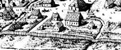

|
From its earliest days, Albany supported a number of brewers who brewed and sold beer to their neighbors and to those living in the countryside as well.  Brewing was an important part of the early Albany community economy. During the seventeenth and eighteenth centuries, a number of individuals practiced the brewer's craft. We know the most about the most successful! Brewing seems to have been a family-based enterprise. The Gansevoorts, Ryckmans, and Visschers were prominent, long-term Albany brewers whose family prospered in the business. Bastian T. Visscher was an Albany/Rensselaerswyck brewer of the middle part of the eighteenth century. He was one of five brewers identified on the Albany census of 1756.Others continued to brew beer for personal consumption or limited distribution. Philip Van Rensselaer's south Albany estate included a "brew house." For a time in the eighteenth century (and possibly earlier), Market Street was referred to as "Brewer's Street." Brewing became an important industry in Albany during the nineteenth century. Distilling and wine-making should be considered separately. A number of online resources further describe the process! Following extensive fieldwork, we have learned that local brewing is again on the rise with several microbreweries operating in Albany today. This search engine will lead you to advertising.
This exposition is in its infancy! It has not been advertised. At this point, it is included only to sustain live links.
Sources: Ultimately, this discussion will be based more on verifiable (project identified) information on brewing during the 17th and 18th centuries in what became the city of Albany. This online posting (and all offerings by the Albany Ale Project) appear to be an excellent places to begin.. silently posted 8/10/03; last updated 6/21/14 |